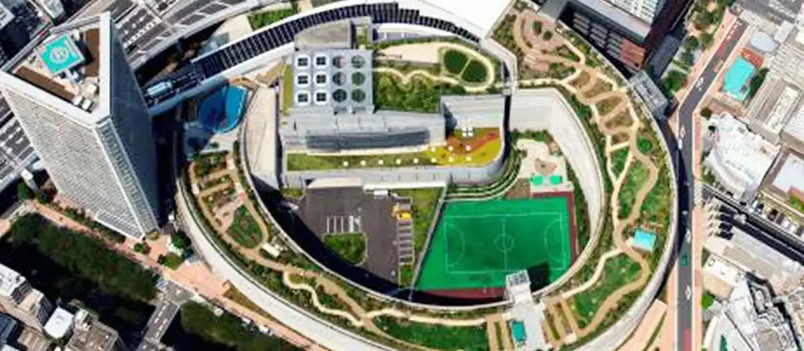

Meguro, Tokyo: things to do, food and stays
Meguro · Tokyo
Meguro
Highlighted on the Tokyo map.

Sights
Dining
Gastronomy Joel Robuchon
ガストロノミー ジョエル・ロブション

European restaurant in Meguro, Tokyo.
megriva
メグリヴァ

European restaurant in Meguro, Tokyo.
Sushi Tsubomi
鮨 つぼみ

Seafood restaurant in Meguro, Tokyo.
En Sui
炎水

Japanese restaurant in Meguro, Tokyo.
luogo

European restaurant in Meguro, Tokyo.
Ranmaru
らんまる

Seafood restaurant in Meguro, Tokyo.
Sushi Saitou Hanare NANZUKA
鮨 さいとう はなれ NANZUKA

Seafood restaurant in Meguro, Tokyo.
tenpura kusunoki Nakameguro ten Reservation
天婦羅 くすのき 中目黒店

Seafood restaurant in Meguro, Tokyo.
caillou Reservation
caillou

European restaurant in Meguro, Tokyo.
Meguro Nagamoto
目黒 ながもと

Seafood restaurant in Meguro, Tokyo.
GELATERIA ACQUOLINA
ジェラテリア アクオリーナ

Sweets and bakery shop in Meguro, Tokyo.
Nakameguro Wakasa
中目黒 若狭

Seafood restaurant in Meguro, Tokyo.
patisserie Paris S'eveille
パティスリー・パリセヴェイユ

Cafe in Meguro, Tokyo.
Premarché Gelateria Toukyou nakameguro ekimae ten
プレマルシェ・ジェラテリア 東京中目黒駅前店

Sweets and bakery shop in Meguro, Tokyo.
Ramen Break Beats

Noodle restaurant in Meguro, Tokyo.
Kasai Reservation
笠井

European restaurant in Meguro, Tokyo.
LESS by Gabriele Riva & Kanako Sakakura

Sweets and bakery shop in Meguro, Tokyo.
Miyabi An
雅庵

Sweets and bakery shop in Meguro, Tokyo.
Le Ressort
ル・ルソール

Sweets and bakery shop in Meguro, Tokyo.
Patisserie la glycine
パティスリー ラ・グリシーヌ

Sweets and bakery shop in Meguro, Tokyo.
Mon St. Clair
Mont St. Clair

Sweets and bakery shop in Meguro, Tokyo.
quinto Reservation
クイント

Restaurant in Meguro, Tokyo.
Yakumo
八雲

Noodle restaurant in Meguro, Tokyo.
Mendokoro Bigiya Gakugei daigaku honten
麺処 びぎ屋 学芸大学本店

Noodle restaurant in Meguro, Tokyo.
LA BOUTIQUE de Joel Robushon Ebisu gaadenpureisu ten
ラ ブティック ドゥ ジョエル・ロブション 恵比寿ガーデンプレイス店

Sweets and bakery shop in Meguro, Tokyo.
China Soba Kazuya
支那ソバ かづ屋

Noodle restaurant in Meguro, Tokyo.
Criollo Nakameguro ten
クリオロ 中目黒店

Sweets and bakery shop in Meguro, Tokyo.
E-chan Shokudo
えーちゃん食堂

Noodle restaurant in Meguro, Tokyo.
Ra Taburu Dou Joeru Robushon
ラ ターブル ドゥ ジョエル・ロブション

European restaurant in Meguro, Tokyo.
Chimoto
ちもと

Sweets and bakery shop in Meguro, Tokyo.
Patisserie JUN UJITA

Cafe in Meguro, Tokyo.
Kurafutaru
クラフタル

European restaurant in Meguro, Tokyo.
TOLO PAN TOKYO

Sweets and bakery shop in Meguro, Tokyo.
JOHANN Honten
ヨハン 本店

Sweets and bakery shop in Meguro, Tokyo.
Addict au Sucre
アディクト オ シュクル

Cafe in Meguro, Tokyo.
torisawa Reservation
とり澤

Meat restaurant in Meguro, Tokyo.